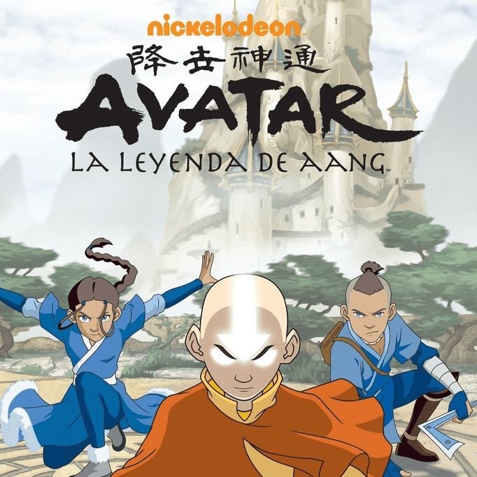

La Leyenda de Aang es una serie animada creada por Michael Dante DiMartino y Bryan Konietzko que combina acción, aventura y espiritualidad en un mundo dividido en cuatro naciones: Agua, Tierra, Fuego y Aire. La historia sigue a Aang, el último Maestro Aire y el Avatar, quien tiene la misión de dominar los cuatro elementos y restaurar el equilibrio del mundo tras cien años de guerra iniciada por la Nación del Fuego. A lo largo de su viaje, Aang y sus amigos Katara, Sokka y Toph enfrentan grandes desafíos, descubren el valor de la amistad y aprenden importantes lecciones sobre responsabilidad, destino y paz.
Esta página web no es un sitio oficial de Avatar: La Leyenda de Aang ni está afiliada a Nickelodeon o a sus creadores. Todo el contenido presentado tiene fines informativos y educativos, creado por un fan con el propósito de compartir información y admiración por la serie.
